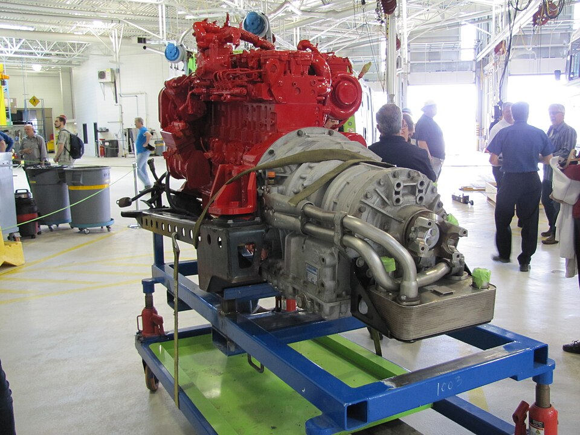

Cummins ISLE-350: ремонт та обслуговування.
Повне маркування й опис завдання допоможуть визначити наступний крок.
Підготувати зверненняЯк визначити виконання
Для Cummins ISLE-350 важливо звірити повне паспортне позначення й серійний номер двигуна.
За наявності повідомте ESN і CPL з таблички: це допомагає уточнити комплектацію та підбір деталей.
Що підготувати для звернення
Маркування двигуна, назву техніки або установки, короткий опис несправності, фото таблички та історію попереднього ремонту, якщо вони є.
Вартість, строк, випробування та доступність деталей узгоджуються після уточнення конкретного завдання.
Підбір ущільненьПідготуйте запит.
Для деталі вкажіть вузол, кількість та артикул або фото, якщо вони відомі.
Підготувати зверненняСімейство Cummins ISLe
У документації Cummins для автомобільного сімейства ISLe наведено шестициліндрову конфігурацію об'ємом 8,9 л. Брошура містить різні налаштування потужності та екологічні виконання, тому дані конкретного двигуна слід звірити за табличкою й серійним номером.
- Сімейство в документації
- ISLe
- Кількість циліндрів
- 6
- Робочий об'єм
- 8,9 л
Це довідка про сімейство, а не підтвердження характеристик саме вашого ISLE-350. Умови ремонту й сумісність деталей уточнюються індивідуально.
Джерело: брошура Cummins ↗Як обговорити ремонт Cummins ISLE-350
Повідомте точне маркування, назву техніки та що саме турбує. За можливості підготуйте фото таблички, відомості про напрацювання й попередні ремонти. Це допоможе визначити наступні кроки для вашого агрегату.
За описом підприємства, ремонт може включати розбирання, очищення, вимірювання деталей, відновлення або заміну несправних компонентів і складання. Склад робіт погоджується після оцінювання двигуна.
Деталі та умови
Для підбору прокладки, гумового кільця чи ремкомплекту потрібні модель і модифікація, вузол та, за наявності, артикул або фото. Сумісність і наявність перевіряються окремо.
Вартість і строк залежать від стану двигуна та потрібних деталей. Умови діагностики, випробувань і гарантії узгоджуються для конкретного замовлення.
Як проходить ремонт ↗